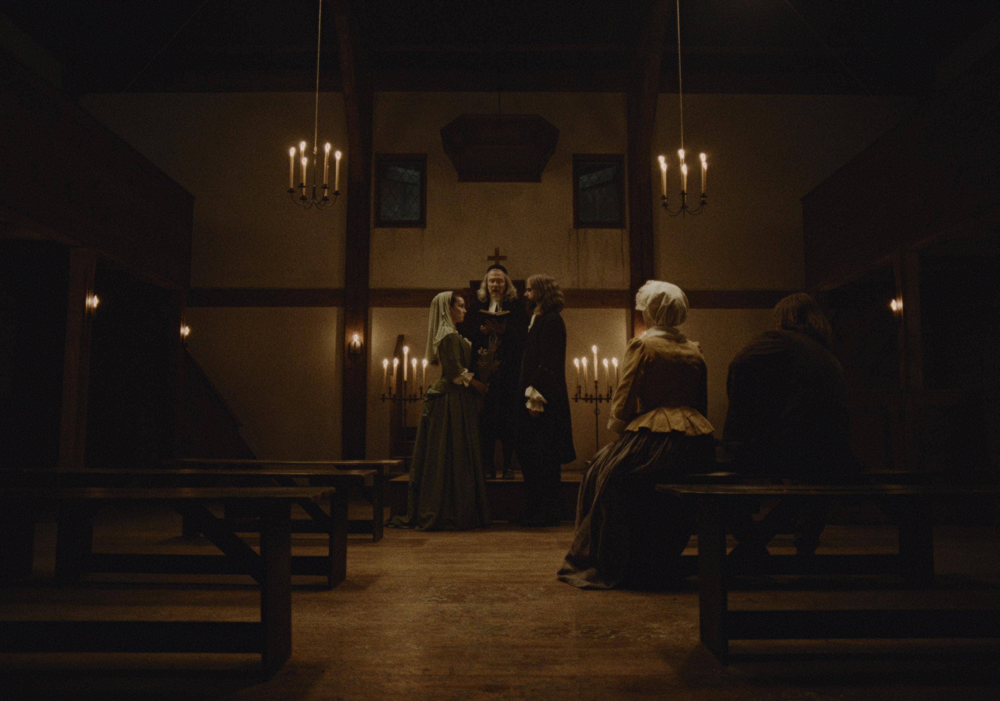

Widow's Bay was founded in 1686 by a group of settlers led by Richard Warren. There were harsh winters, illness, starvation, and even rumors of cannibalism. Warren married his wife, Sarah, in 1702. Warren died the same year, and Sarah left the island soon after.
It is said that Warren ate hallucinogenic mushrooms on the island then struck a deal with a demon entity. The entity is tied to the island, and its deal was simple. In exchange for livable conditions during harsh winters, there must be one sacrifice per year. Warren was the first sacrifice, killed by his wife for his aggression after making a deal with the entity. The second condition is that people born on the island can never leave. However, anybody can be used as a sacrifice, and anybody can kill them, similar to Warren.